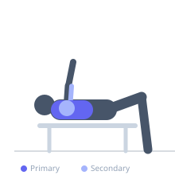

Exercise guide / 1-Board Bench Press
1-Board Bench Press
The 1-Board Bench Press is a bench press variation where a single wooden board (approximately 2 inches thick) is placed on the chest to shorten the range of motion slightly. This variation allows the lifter to overload the upper portion of the pressing movement, building strength in the mid-to-top range where many lifters experience a sticking point.
Primary muscles
pectoralis major sternal
pectoralis major clavicular
Secondary muscles
deltoid anterior
triceps lateral head
triceps medial head
Stabilizers
subscapularis
pectoralis minor
Equipment
Standard Barbell
Flat Bench
Optional
Power Rack (Squat Cage)


Starting position
- Lie on a flat bench. A training partner holds a 2-inch board flat against your chest. Grip the bar slightly wider than shoulder-width.
Setup
- Have a training partner hold a 2x6 or 2x8 wooden board against the lower chest. The board reduces ROM by approximately 2 inches. Can also be held in place with a shirt or elastic band.
Steps
- Step 1: Unrack the bar and lower it under control to the board.
- Step 2: Touch the board with the bar and pause briefly before pressing.
- Step 3: Drive the bar back up to full elbow extension.
- Step 4: Repeat for the prescribed reps, keeping the board in contact with the chest throughout.
Coaching cues
- Touch and go off the board — no bouncing
- Stay tight and control the descent as you would a full ROM press
Breathing
- Inhale and brace before lowering. Exhale as you drive the bar up.
Range of motion
- Bar travels to the board surface only. Full lockout at top.
Tempo
- 3-1-1-0
Common mistakes
- Bouncing off the board rather than pausing
- Failing to maintain upper back tension during the reduced ROM
Safety
- Requires a training partner to hold the board safely
- Can be used with loads slightly above your full ROM max
Training
- strength: 1–5 reps
- strength: 3–6 sets
- Rest: {'strength': 240}